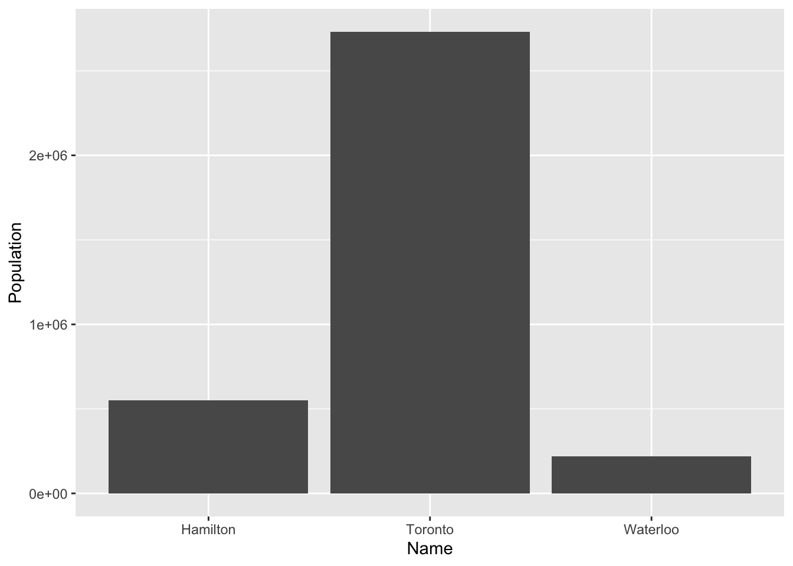
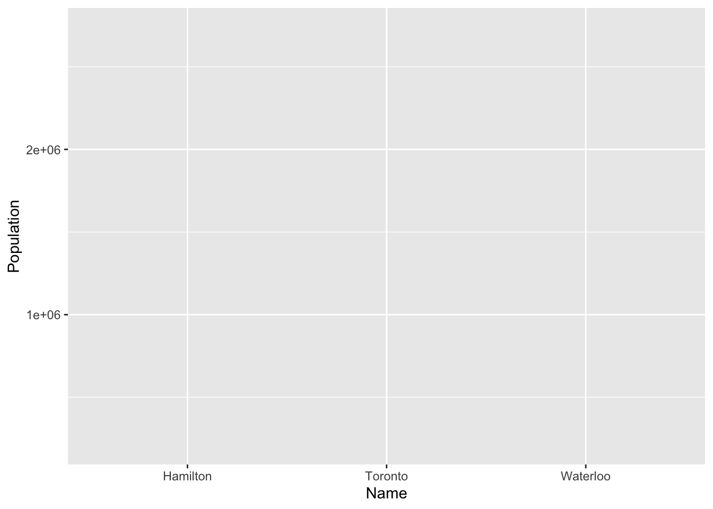
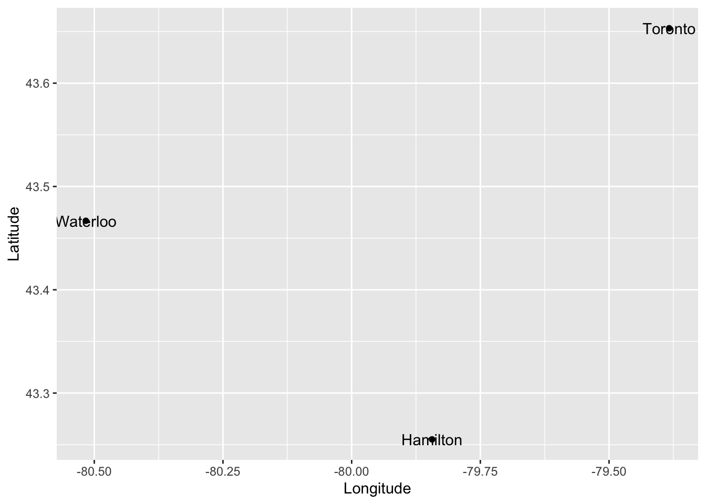
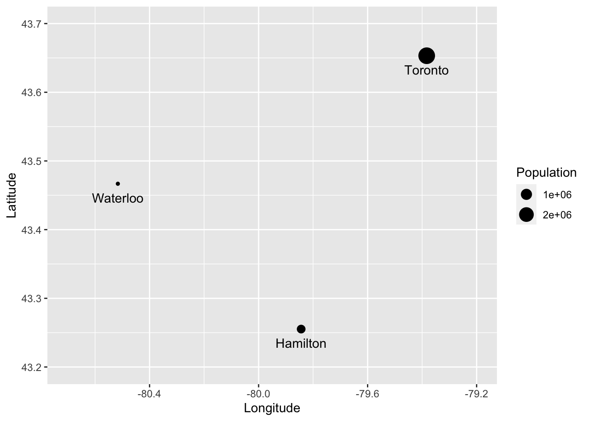

Chapter 2 Basic Operations and Data Structures in R
NOTE: The source files for this book are available with companion package {isdas}. The source files are in Rmarkdown format and packed as templates. These files allow you execute code within the notebook, so that you can work interactively with the notes.
The preceding chapter showed you how to install R and RStudio, and explained some key concepts, such as packages as fundamental units of reproducible code, and the concept of your library (where the packages that you install are stored).
Now that you have installed R and RStudio we can begin with an overview of basic operations and data structures in this computing language. Please note that this document you are reading, called an R Notebook, is an example of what is called literate programming, a style of document that uses code to illustrate a discussion, as opposed to the traditional programming style that uses natural language to discuss/document the code. By focusing on natural language as opposed to computer-speak, literate programming flips around the usual manner of technical writing to make documents more intuitive and accessible.
Whenever you see a chunk of code in an R Notebook, you can run it (by clicking the ‘play’ icon on the top right corner) to see the results. Try it! You can also copy and paste to your console if you are reading the web version of the book.
print("Hello, Geography 4GA3")## [1] "Hello, Geography 4GA3"The chunk of code above instructed R (and through R the computer) to print (or display on the screen) some text.
2.1 Learning Objectives
In this practice, you will learn:
- Basic operations in
R. - Data classes, data types, and data transformations.
- More about the use of packages in
R. - Basic visualization.
2.2 RStudio IDE
If you are reading this, you probably already read the introductory chapter that instructed you to install R and RStudio. We can now proceed to discuss some basic concepts of operations and data types.
2.3 Some Basic Operations
R can perform many types of operations. Some simple operations are arithmetic. Other are logical. And so on.
For instance, R can be instructed to conduct sums, as follows:
# `R` understands numbers and arithmetic operators such as `+` for addition
2 + 2## [1] 4R can be instructed to do multiplications:
# The sign to instruct `R` to multiply is `*`
2 * 3## [1] 6And sequences of operations, possibly using brackets to indicate their order. Compare the following two expressions:
2 * 3 + 5## [1] 112 * (3 + 5)## [1] 16Other operations produce logical results (values of true and false):
# Is the statement true?
3 > 2## [1] TRUE# Is this true?
3 < 2## [1] FALSEAnd of course, you can combine operations in an expression:
2 * 3 + 5 < 2 * (3 + 5)## [1] TRUEAs you can see, R can be used as a calculator, but it is much more powerful than that.
We can also create variables. You can think of a variable as a box with a name, whose contents can change. Variables are used to keep track of important stuff in your calculations, and to automate operations. To create a variable, a value is assigned to a name, using this notation <-. You can read this x <- 2 as “assign the value of 2 to a variable called x”. For instance:
# `<-` means "put the value of 2 in the object called `x`"
x <- 2
# `<-` means "put the value of 3 in the object called `y`"
y <- 3
# `<-` means "put the value of 5 in the object called `z`"
z <- 5Check your “Global Environment”, the tab where the contents of your “Workspace” are displayed for you. You can also simply type the name of the variable in the Console to see its contents. Now that we have some variables with values, we can express operations as follows (same as above)
x * y + z## [1] 11x * (y + z)## [1] 16However, if we wanted, we could change the values of any of x, y, and/or z and repeat the operations. This allows to automate some instructions:
x <- 4
x * y + z## [1] 17The famous mathematician Henri Poincaré once wrote that “[m]athematics is the art of giving the same name to different things”. Working with a computer language is a lot like that: giving the same name to different values allows us to explore with ease “what would happen if…”. It is a very powerful tool to help us understand the world.
2.4 Data Classes in R
As you saw above R can work with different data classes. Some data are numbers. Other data are logical (i.e., take values of TRUE or FALSE). These are some data classes:
- Numerical
- Character
- Logical
- Factor
The existence of different data classes is very useful, since it allows you to store information in different forms. For instance, you may want to save some text:
name <- "Hamilton"Or numerical information:
population <- 551751If you wish to check what class an object is, you can use the function class:
class(name)## [1] "character"class(population)## [1] "numeric"2.5 Data Types in R
R can work with different data types, including scalars (essentially matrices with only one element), vectors (matrices with one dimension of size 1) and matrices (more generally).
print('This is a scalar')## [1] "This is a scalar"1## [1] 1print('This is a vector')## [1] "This is a vector"# c() is a function to concatenate, that is, to put values in a vector
c(1,2,3,4)## [1] 1 2 3 4print('This is a matrix')## [1] "This is a matrix"# matrix() creates a two-dimensional array with `nrow` rows, and `ncol` columns
matrix(c(1,2,3,4),nrow = 2, ncol=2)## [,1] [,2]
## [1,] 1 3
## [2,] 2 4The command c() is used to concatenate the arguments, that is, to join them in a single object. The objects must be of the same class: they must be all numeric, or all character, or all logical, and so on. We cannot combine different data classes in a vector. The command matrix() creates a matrix with the specified number of rows and columns.
An important data type in R is a data frame. A data frame is a table consisting of rows and columns - commonly a set of vectors that have been collected for convenience. A data frame is used to store data in digital format. (If you have used Excel or another spreadsheet software before, data frames will be familiar to you: they look a lot like a sheet in a spreadsheet.)
A data frame can accommodate large amounts of information (several billion individual items). The data can be numeric, character, logical, and so on. Each grid cell in a data frame has an address that can be identified based on the row and column it belongs to. R can use these addresses to perform mathematical operations. `R`` labels columns alphabetically and rows numerically (or less commonly alphabetically).
To illustrate a data frame, let us first create the following vectors, that include names (character class), populations (numeric class), average salaries (numeric class), and coordinates (numeric class) of some cities:
# c() is a function to concatenate, that is, to put values in a vector
Name <- c('Hamilton','Waterloo','Toronto')
Population <- c(551751, 219153, 2731571)
AvgSalary <- c(45692, 57625, 48920)
Latitude <- c(43.255203, 43.4668, 43.6532)
Longitude <- c(-79.843826, -80.51639, -79.3832)Again, note that <- is an assignment. In other words, it assigns the item on the right to the name on the left.
After you execute the chunk of code above, you will notice that new values appear in your Environment. These are five vectors of size 1:3. You can also see what is the class of the vector: one that is composed of alphanumeric information (or chr, for ‘character’) and four columns that are numeric (num).
These vectors can be collected in a dataframe. This is done for convenience, so we know that all these data belong together in some way. Please note that to create a data frame, the vectors must have the same length. In other words, you cannot create a table with elements that have different numbers of rows (other data types allow you to do this, but not data frames).
We will now create a data frame. We will call it “Cities”. There are rules for names (for example, they cannot begin with a number), but in most cases it helps if the names are intuitive and easy to remember. The function used to create a data frame is data.frame() and the arguments are the vectors that we wish to collect there.
Cities <- data.frame(Name, Population, AvgSalary, Latitude, Longitude)After running the chunk above, now you have a new object in your environment, namely a data frame called Cities.
If you double click on Cities in the Environment tab, you will see that this data frame has five columns (labeled Name, Population, AvgSalary, Latitude, and Longitude), and three rows. You can enter data into a data frame and then use the many built-in functions of R to perform various types of analysis.
At this point, you may notice that Name, which was an alphanumeric vector, was converted to a factor in the data frame. A factor (data class) is a way to store nominal/categorical variables that may have two or more levels. Nominal variables are like labels. In the present case, the factor variable has three levels, corresponding to three cities. If we had information for multiple years, each city might appear more than once, for each year that information was available.
2.6 Indexing and Data Transformations
Data frames store information that is related in a compact way.
To perform operations effectively, it is useful to understand the way R locates information in a data frame. As noted before, each grid cell has an address, or in other words an index, that can be referenced in several convenient ways. For instance, assume that you wish to reference the first value of the data frame, that is, row 1 of column Name. To do this, you would use the following instruction:
# To index elements in a data frame we use square brackets `[]`
# The first number in the square bracket is the row, and the second number
# (separated by a comma) is the column
Cities[1,1]## [1] "Hamilton"This will recall the element in the first row and first column of Cities. It also tells you what are the levels of this variable.
As an alternative, you could type:
Cities$Name[1]## [1] "Hamilton"As you see, this has the same effect. The string sign $ is used to reference columns in a data frame. Therefore, R will call the first element of Name in data frame Cities.
Cities[1,2] is identical to Cities$Name[2]. Try changing the code in the chunk and executing. If you type Cities$Name, R will recall the full column.
Indexing is useful to conduct operations. Suppose for instance, that you wished to calculate the total population of two cities, say Hamilton and Waterloo. You can execute the following instructions:
# The string sign `$` is used to make reference to a column in the data frame.
# The square brackets index the row in the column.
Cities$Population[1] + Cities$Population[2]## [1] 770904(More involved indexing is also possible, for example, if we use logical operators. Do not worry too much about the details at this point, just verify that the results are identical)
# The indexing now is a logical statement. The double equal sign `==` is used
# to make logical comparisons. `R` will find the rows for which `Cities$Name=='Hamilton'`
# in the first element of the sum, and the rows for which `Cities$Name=='Waterloo'`
# is true in the second element of the sum.
Cities$Population[Cities$Name=='Hamilton'] + Cities$Population[Cities$Name=='Waterloo']## [1] 770904Suppose that you wanted to calculate the total population of the cities in your data frame. To do this, you would use the function sum():
# `sum()` is a function to add all elements in a numerical vector.
# This could be a column in a data frame
sum(Cities$Population)## [1] 3502475You have already seen how it allows you to store in memory the results of some instruction, by means of an assignment <-. You can also perform many other useful operations. For instance, calculate the maximum value for a set of values:
# `max()` finds the maximum value in a numerical vector
max(Cities$Population)## [1] 2731571And, if you wanted to find which city is the one with the largest population, you would use a logical statement as an index:
# `R` will find all rows for which the statement
# `Cities$Population==max(Cities$Population)`, that is,
# all the rows with a population identical to the maximum population!
Cities$Name[Cities$Population==max(Cities$Population)]## [1] "Toronto"As you see, Toronto is the largest city (by population) in this dataset. Using indexing in imaginative ways provides a way to do fairly sophisticated data analysis.
Likewise, the function for finding the minimum value for a set of values is min():
# `min() finds the minimum value in a numerical vector
min(Cities$Population)## [1] 219153Try calculating the average of the population of the cities, using the command mean(). Use the empty chunk below for this (the result should be 1167492), or do this in your console in RStudio:
Finding the maximum and minimum, aggregating (calculating the sum of a series of values), and finding the average are examples of transformations applied to the data. They give insights into aspects of the dataset that are not necessarily evident from the raw data, especially if the number of observations (or cases) is large. Imagine trying to visually scan a spreadsheet with ten thousand observations to find the maximum value stored there!
2.7 Visualization
The data frame, in essence a table, informative as it is, is no usually the best way to learn from the data. Transformations (or descriptive statistics as discussed above) are helpful to understand important properties of a dataset. In addition, visualization is often a valuable complement to data analysis. Say, we might be interested in finding which city has the largest population and which city has the smallest population in a dataset. We could achieve this by using similar instructions as before, for example:
# `paste()` is similar to `print()`, except that it converts everything #
# to characters before printing. We use this function because the contents
# of `Name` in the data frame `Cities` are not characters, but levels of a factor`
paste('The city with the largest population is',
Cities$Name[Cities$Population==max(Cities$Population)])## [1] "The city with the largest population is Toronto"paste('The city with the smallest population is',
Cities$Name[Cities$Population==min(Cities$Population)])## [1] "The city with the smallest population is Waterloo"Another way, perhaps more convenient of understanding these data is by visualizing them, using for instance a bar chart.
We will proceed to create a bar chart, using a package called ggplot2. This package implements a grammar of graphics, and is a very flexible way of creating plots in R. Since ggplot2 is a package, we first must ensure that it is installed. You can install it using the command install as follows:
# Once you have installed a package, it does not need to be installed again!
# It already is in your library and you only need to load it with `library()`
install.packages("ggplot2")As an alternative to the install.packages() function, you can use the Packages tab in RStudio. Simply navigate to the tab, click install, and select ggplot2 from there. Note that you need to install the package only once! Essentially install adds it to your library of packages, where it will remain available.
Once the package is installed, it becomes available, but to use it you must load it in memory (similar to opening a “book” on your desktop as you work). For this, we use the command library(), which is used to load a package, that is, to activate it for use.
Assuming that you already have installed ggplot2, we proceed to load it:
library(ggplot2)Now all commands from the ggplot2 package are available to you.
The package ggplot2 works by layering a series of objects, beginning with a blank plot, to which we can add things. The command to create a plot is ggplot(). This command accepts different arguments. For instance, we can pass data to it in the form of a data frame. We can also indicate different aesthetic values, that is, the things that we wish to plot. None of this is plotted, though, until we indicate which kind of geom or geometric object we wish to plot.
For a bar chart, we would use the following instructions:
# The function `ggplot()` creates an object for plotting,
# using a data frame as indicated by the input argument `data =`.
# Furthermore, we can specify how to map elements in the data frame
# to things in the plot. In this example, we wish to map the names
# of cities to the x-axis of the plot, and the population to the y-axis
# of the plot. Accordingly, we define as aesthetic values `aes()` `x = Name`
# and `y = Population`. The geometric object that we wish to plot is bars,
# so we use `geom_bar()` with the argument `stat = "identity"` so the data
# are not transformed before plotting:
ggplot(data = Cities,
aes(x = Name, y = Population)) +
geom_bar(stat = "identity")
Since this is the first time that we use ggplot(), it is informative to break down these instructions. We are asking ggplot2 to create a plot that will use the data frame Cities. Furthermore, we tell it to use the values of Names in the x-axis, and the values of Population in the y-axis. Run the following chunk:
ggplot(data = Cities,
aes(x = Name, y = Population))
Notice how ggplot2 creates a blank plot, and it has yet to actually render any of the population information in there. We layer elements on a plot by using the + sign. It is only when we tell the package to add some geometric element that it renders something on the plot. In the previous case, we told ggplot2 to draw bars (by using the geom_bar() function). The argument of geom_bar was stat = 'identity', to indicate that the data for the y-axis was to be used ‘as-is’ without further statistical transformations.
There are many different geoms that can be used in ggplot2. You can always consult the help/tutorial files by typing ??ggplot2 in the console. See:
??ggplot22.8 Creating a Simple Map
We will see how maps are used in spatial statistical analysis. The simplest one that can be created is a so-called dot map. A dot map simply displays the locations of events of interest, as points. A dot map is, in fact, simply a scatterplot of the coordinates of events. We can use ggplot2 to create a simple dot map of the cities in our sample dataset. For this, we create a ggplot2 object, and for the x and y aesthetics we use the coordinates. The geometric element that we want to render is a point:
# The longitude is mapped to the x-axis of the plot and the latitude is mapped
# to the y-axis of the plot. The function `geom_points()` is used to draw points:
ggplot(data = Cities,
aes(x = Longitude, y = Latitude)) +
geom_point()
This is a simple dot map that simply shows the locations of the cities. We can add labels by means of the geometric element text:
# `geom_text()` is used to write text on the plot,
# still using the longitude and latitude information:
ggplot(data = Cities,
aes(x = Longitude, y = Latitude)) +
geom_point() +
geom_text(aes(label = Name))
The dot map above tells us the location of the cities in our dataframe and their name. We can include more information in the plot in different ways. For example, a proportional symbol map changes the size of the symbols (the points) to add information to the plot. To create a proportional symbol map, we add to the aesthetics the instruction to use some variable for the size of the symbols:
# The `size` of the points will be proportional to the
# Population` values in the data frame
ggplot(data = Cities,
aes(x = Longitude, y = Latitude)) +
geom_point(aes(size = Population)) +
geom_text(aes(label = Name))
Furthermore, we can fix the position of the labels by adding a vertical justification to the text (vjust), and to avoid the text from being cut we can also expand the limits of the plot (expand_limits()):
ggplot(data = Cities,
aes(x = Longitude, y = Latitude)) +
geom_point(aes(size = Population)) +
geom_text(aes(label = Name),
vjust = 2) +
expand_limits(x = c(-80.7, -79.2),
y = c(43.2, 43.7))
The example above has guided you in the creation of a relatively simple proportional symbols map! You can see that creating a plot is simply a matter of instructing R (through ggplot2) to complete a series of instructions:
Create a
ggplot2object using a dataset, which will render stuff at locations given by variable1 and variable 2:ggplot(data = dataset, aes(x = variable1, y = variable2))Add stuff to the plot. For instance, to add points use
geom_point, to add lines usegeom_line, and so on.
Check the ggplot2 Cheat Sheet for more information on how to use this package.
2.9 Examples of digital cartography in R
A last note. Many other visualization alternatives (for instance, Excel) provide point-and-click functions for creating plots. In contrast, working in R requires plots to be created by meticulously instructing the package what to do. While this is more laborious, it also means that you have complete control over the creation of plots, which in turn allows you to create more flexible and inventive visuals. Below are some of figures that I have created using R in recent years, including diagrams, thematic maps, and raster data.
)](figures/02-Figure-1.png)
FIGURE 2.1: Example of visualization: diagram of catchment areas for accessibility analysis (from Paez, Higgins, and Vivona (2018))
)](figures/02-Figure-2.png)
FIGURE 2.2: Example of visualization: accessibility to family doctors in Hamilton (from Paez, Higgins, and Vivona (2018))
)](figures/02-Figure-3.png)
FIGURE 2.3: Example of visualization: water sources (triangles) and households (circles) in a region in central Kenya (from Paez et al. (2020))
And, these are some figures created using R by talented people around the world.

FIGURE 2.4: Example of visualization: Historical map with shading
FIGURE 2.5: Example of visualization: Population density of Madagascar
FIGURE 2.6: Example of visualization: Street map of Kyoto
FIGURE 2.7: Example of visualization: Median household income in California
This concludes your basic overview of basic operations and data structures in R. You will have an opportunity to learn more about creating maps in R with your reading.